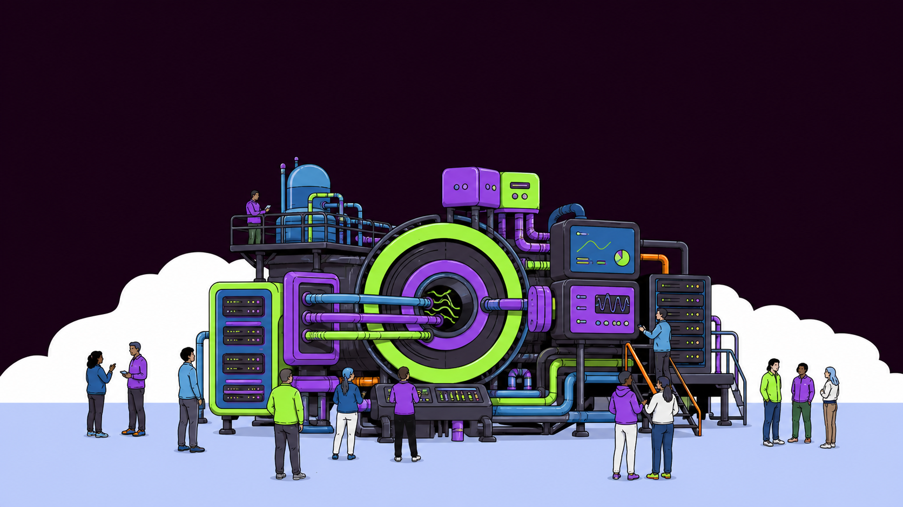

♢
Seguridad primero
Infraestructura endurecida, monitoreo continuo y gestión proactiva de riesgos.

De procesos fragmentados a una operación conectada. PARMUX integra infraestructura, datos, automatización e inteligencia artificial aplicada para que tu organización avance con confianza.
Infraestructura endurecida, monitoreo continuo y gestión proactiva de riesgos.
Registro y auditoría completa de cada cambio, evento y decisión del sistema.
Automatizamos procesos repetitivos para acelerar resultados y reducir errores.
Escalamiento claro y acompañamiento experto en momentos críticos.
Plataformas resilientes, escalables y seguras, diseñadas para operar sin interrupciones.
Ver más →Conectamos sistemas, datos y servicios para que todo funcione como un solo flujo.
Ver más →Diseñamos y operamos automatizaciones confiables que liberan tiempo y reducen fricción.
Ver más →Cómo trabajamos
Mapeamos personas, decisiones, sistemas, dependencias y puntos donde hoy se pierde capacidad.
Definimos una solución acotada, segura y mantenible antes de implementar.
Conectamos datos, servicios y tareas con trazabilidad desde el primer flujo.
Observamos el uso real, resolvemos fricción y mejoramos sin perder continuidad.
Continuidad operacional
Estados, eventos y alertas que permiten entender qué ocurre.
Accesos, datos y cambios protegidos desde el diseño.
Respaldos y rutas claras para volver a operar.
Documentación y acompañamiento para reducir dependencia.
El resultado importa
Conversemos